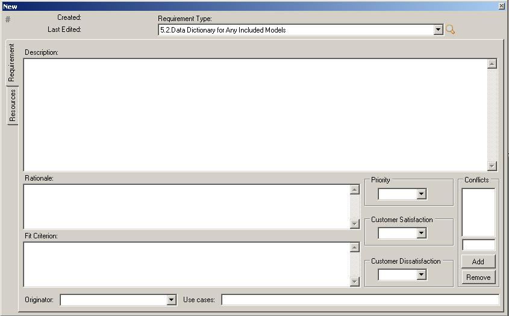

Creating Requirements
1. From Requirements Manager click Add
2. Fill in the required blanks. Only the Requirement Type is required for saving. Everything else
can be changed later. You can only add conflicting requirements that are already present in the
database. Added conflict will be shown on both conflicting requirements.
Resources and originator combos are filled with all the values from your opened database.
3. Right click on the requirement title bar and select Save. After your requirement has been
saved, it gets an ID automatically.
